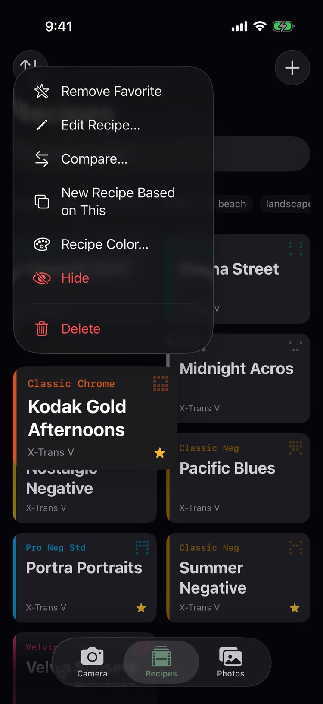
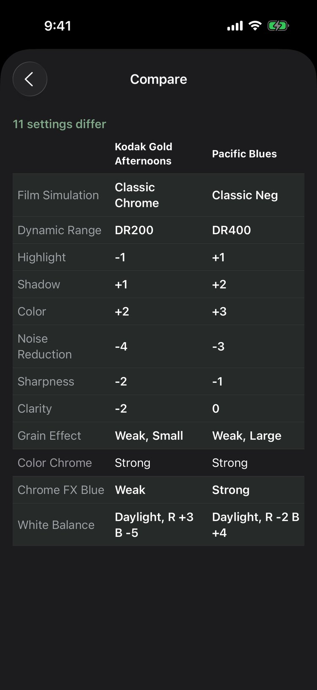
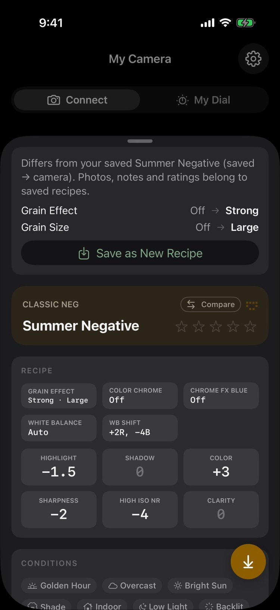
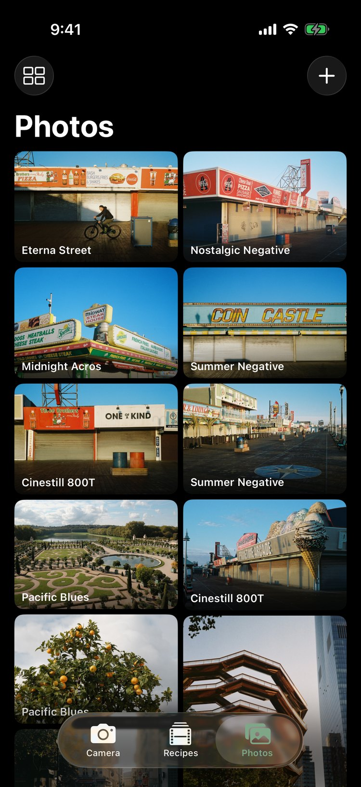
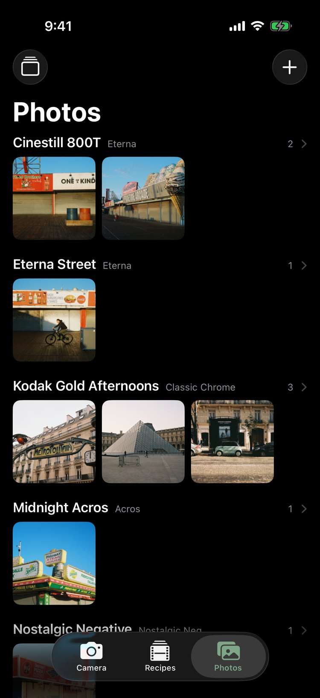
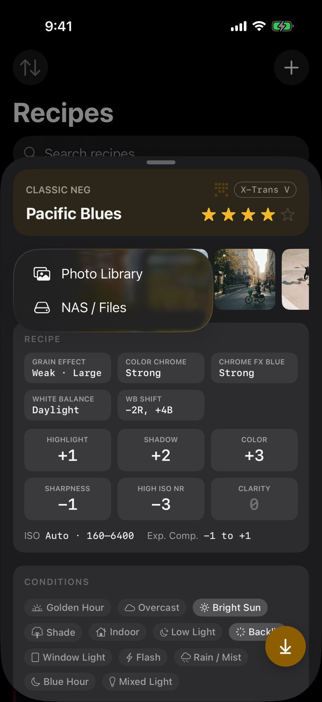

InkFrame
Your Fujifilm film simulation recipes, in your pocket.
Every recipe, at a glance
Fujifilm photographers love recipes: Kodak Gold afternoons, Portra portraits, Pacific Blues beach walks. InkFrame keeps them all in one place on your iPhone, with every setting on a single page and no digging through camera menus.




Your camera, connected
Plug your Fujifilm into your iPhone over USB-C and InkFrame reads what is loaded in C1–C7. No computer needed. Send a recipe to any slot with one tap.


Works with Fujifilm X cameras over USB-C. Set the camera's USB mode to USB TETHER SHOOTING FIXED.
Photos that show what a recipe does
Attach reference photos to any recipe, so you can see what it looks like before you head out. Open a recipe and flip through its photos, or browse every reference photo in one gallery.



What's New
Loading latest release…
Get InkFrame
InkFrame for iPhone is in beta. Sign up and I'll let you know when access is available.
← Eric Brock •
© Eric Brock. Built on Paradigm Shift.